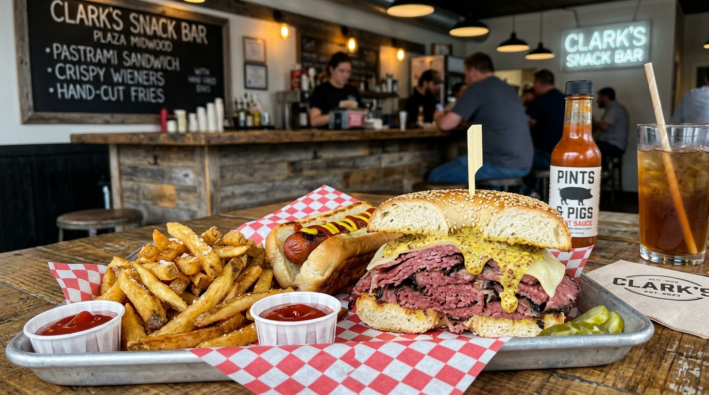

1. Golden Butter-Toasting
Griddling thick-cut sourdough with clarified European butter on seasoned chrome flat tops to achieve a golden, shatteringly crisp exterior crust.
Great grilled cheese is an art form. At Papi Queso, we pair locally baked thick-cut artisan sourdough with custom cheese blends engineered for dramatic cheese pulls, deep savory complexity, and balanced acidity.

Griddling thick-cut sourdough with clarified European butter on seasoned chrome flat tops to achieve a golden, shatteringly crisp exterior crust.
Combining sharp aged cheddars for punch with creamy fontina and provolone for silky elasticity, creating the signature Papi cheese pull.
Smoking pork shoulder for over 12 hours over hickory wood, pulling it tender, and pairing it with scratch macaroni and cheese in the famous Pig Mac.